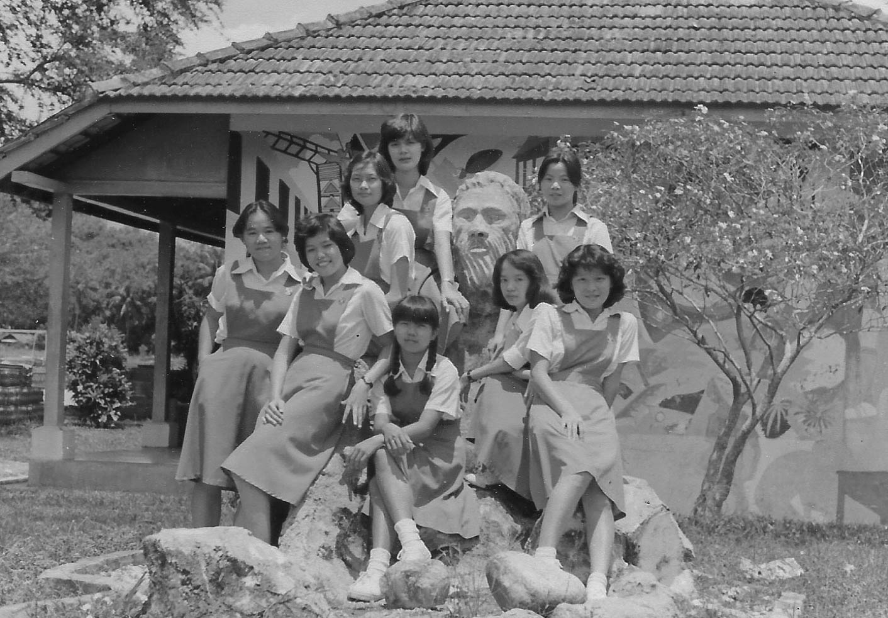
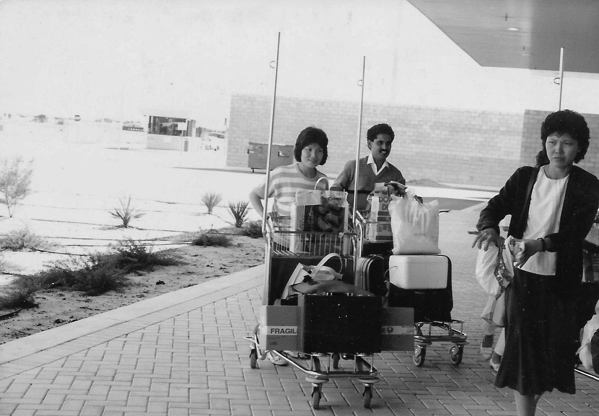
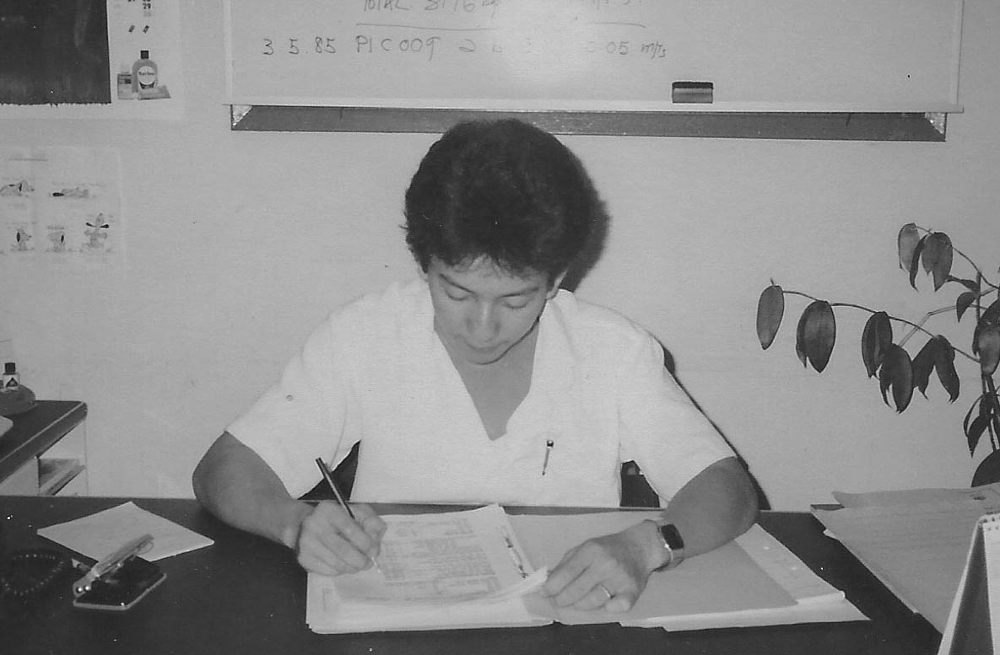
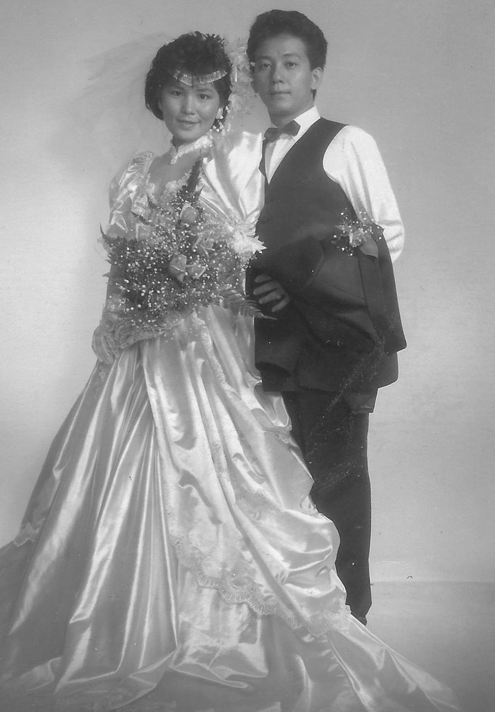
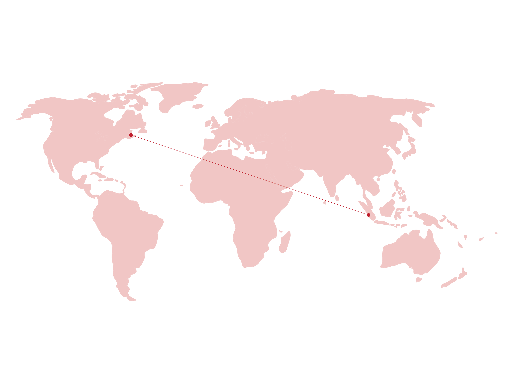
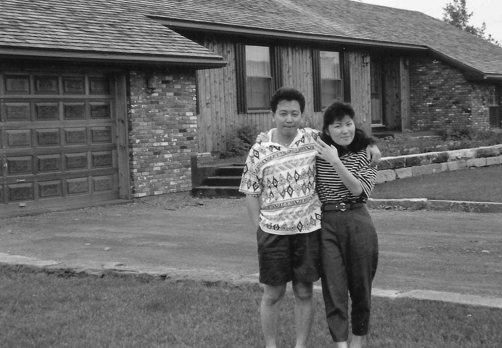
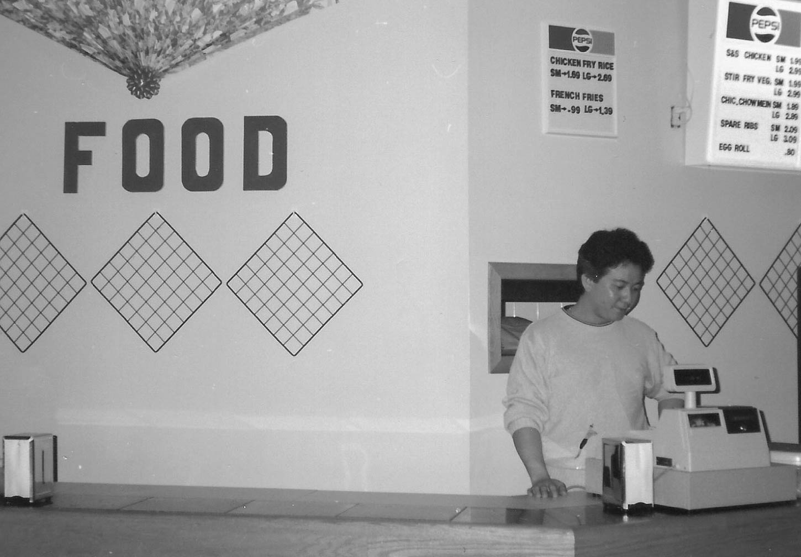
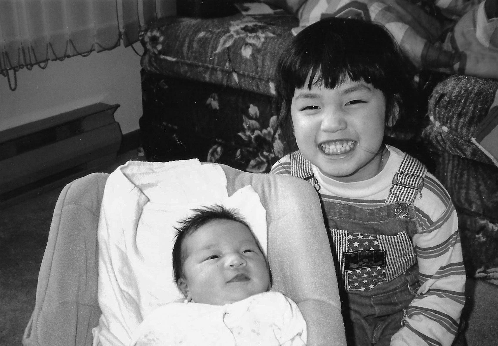
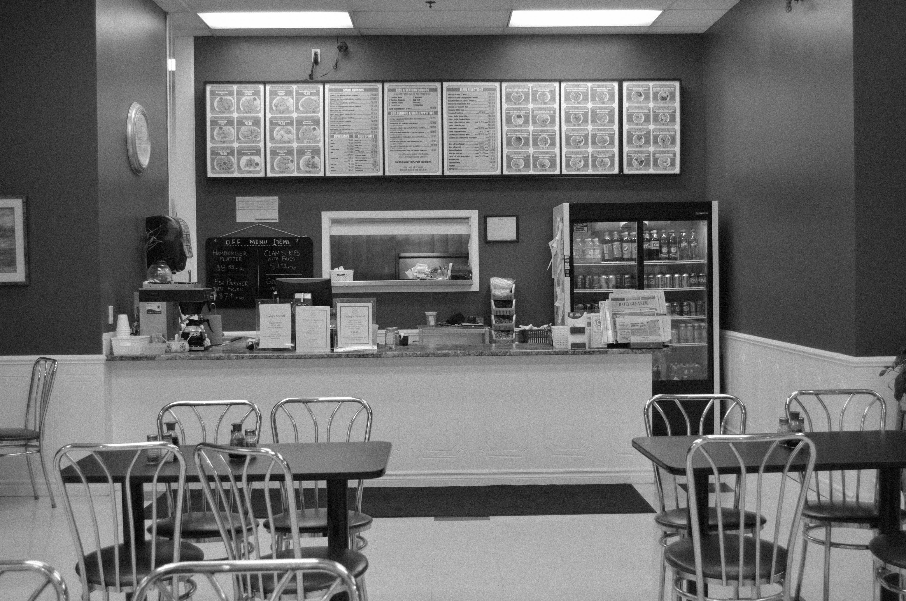

-
-
1963
-
1963
-
1983
-
1985
-
1987
-
1990
-
1991
-
1995
-
1996
-
1998
-
2000
-
2018
1963
My mom Seline is born in Perak, Malaysia on July 13th, 1963.

1963
My dad Loy, is born in Kedah, Malaysia on September 28th, 1963.
1983
In their early 20's, Seline & Loy move to Selangor, Malaysia where they will eventually meet.

1985
While working at the same factory together in Selangor, Seline & Loy met at the age of 22.

1987
Two years after meeting, Seline & Loy got married in May, 1987.

1990
When they were 27, they decided to make move to the east coast of Canada where
my mother's brother was residing. They moved to New Glasgow and worked at my
brother's restaurant to make a living. They spent 5 years here moving to several
different apartments but never found a place to call home.

1991
On December 8th, 1991, their first daughter Jasmine was born.
1995
Following her brother, my mother and father moved to Fredericton, New Brunswick
to begin a new life. They first resided in the outskirts of Fredericton before eventually
settling down in their first real home.

1996
On January 30th, 1996, their second daughter Abbey was born.
1998
In 1998, they open up their first restaurant together called Chong's Place
in Fredericton. Working hard to create a business and provide for their family.

2000
On March 9th, 2000, they welcomed the last memember of their family, Lydia.

2018
As of 2018, Seline & Loy are still running their business after 20 years. They still remain
in the home they bought in Fredericton. Currently their daughters are all in university with
Jasmine in Montreal, Abbey in Toronto and Lydia beginning school in Fredericton.
